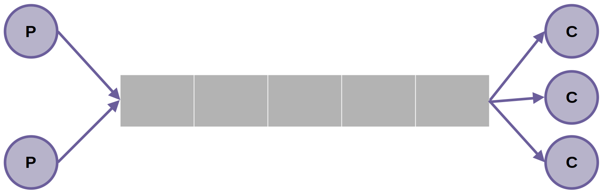
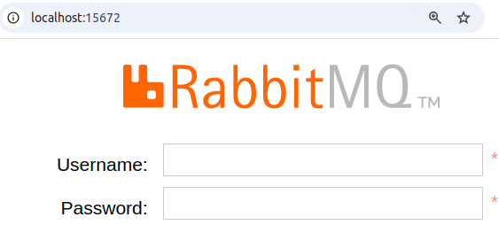

RabbitMQ
What is RabbitMQ?
RabbitMQ is a popular open-source message broker that simplifies messaging between distributed systems via AMQP (Advanced Message Queuing Protocol) and other protocols in a scalable and reliable manner.
Tutorial
Let's practice and learn how to use RabbitMQ! We will implement the producer-consumer model (seen in the Sistemas-Hardware-Software course).

In this model, one or more applications will produce messages, which must be processed asynchronously by one or more consumer applications.
Info!
The management and delivery of messages will be done by RabbitMQ!
Creating the producer
Our application will be very simple: the user will type any text. We will use RabbitMQ to ensure that this message is received by another consuming application.
Let's start with the producer!
Tip! 1
Create a new folder and store all the activities in this tutorial in it!
Question 1
Info!
For now, forget about RabbitMQ, just make sure you can read messages typed by the user.
Instantiate RabbitMQ
Create docker-compose.yml
Let's start a RabbitMQ service using Docker.
Let's create a docker-compose.yml file with the following content:
services:
rabbitmq:
image: rabbitmq:3-management
container_name: rabbitmq
restart: always
ports:
- 5672:5672
- 15672:15672
volumes:
- ./rabbitmq:/var/lib/rabbitmq
environment:
- RABBITMQ_DEFAULT_USER=admin
- RABBITMQ_DEFAULT_PASS=112233
Tip! 2
Docker Compose allows defining and running multiple Docker containers using a Compose file that describes the whole application. It makes it easy to collaborate on multi-container apps.
For now our application will only contain RabbitMQ, but it costs nothing to practice!
Question 2
Answer!
The ports section maps the container's ports to the host's ports:
-
5672:5672: This maps port5672of the RabbitMQ container to port5672on the host machine. Port5672is the default port for AMQP (Advanced Message Queuing Protocol), which is used for messaging by RabbitMQ. -
15672:15672: This maps port15672of the RabbitMQ container to port15672on the host machine. Port15672is the default port for the RabbitMQ Management Plugin, which provides a web-based user interface for managing RabbitMQ.
Question 3
Start RabbitMQ
Question 4
Question 5
Answer!
You should see a page similar to:

Tip! 3
Use the username and password configured in docker compose.
Question 6
Send messages to Queue
Let's use the pika client to communicate between our Python application and Rabbitmq. Install it with:
Tip! 4
It's a good idea to do this in a virtual environment!
So let's create a producer.py code so that it does the sending of messages to the queue.
Question 7
This will be the producer.py:
import pika
import os
from dotenv import load_dotenv
load_dotenv()
# Configure credentials
credentials = pika.PlainCredentials(
os.getenv("RABBIT_USERNAME"), os.getenv("RABBIT_PASSWORD")
)
# Create a connection
connection = pika.BlockingConnection(
pika.ConnectionParameters("localhost", credentials=credentials, heartbeat=0)
)
channel = connection.channel()
# Create a queue named "chitchat"
channel.queue_declare(queue="chitchat", durable=True)
while True:
msg = input("Type a message: ")
if msg == "exit":
# Close connection
connection.close()
break
# Send a message to queue
channel.basic_publish(
exchange="",
routing_key="chitchat",
body=msg,
)
Question 8
Atention
If you don't understand something, ask the professor for help!
Question 9
Consume messages
Now let's program the consumer!
Question 10
This will be the content of consumer.py:
import pika
import os
from dotenv import load_dotenv
load_dotenv()
# Define callback function (consumer function)
def callback(ch, method, properties, body):
print(f"Received: {body}")
# Notify RabbitMQ that message was processed
ch.basic_ack(method.delivery_tag)
# Configure credentials
credentials = pika.PlainCredentials(
os.getenv("RABBIT_USERNAME"), os.getenv("RABBIT_PASSWORD")
)
# Create a connection
connection = pika.BlockingConnection(
pika.ConnectionParameters("localhost", credentials=credentials, heartbeat=0)
)
channel = connection.channel()
# Declare a queue named "chitchat"
channel.queue_declare(queue="chitchat", durable=True)
# Configures which function should process the messages
channel.basic_consume(
queue="chitchat",
auto_ack=False,
on_message_callback=callback,
)
print("Waiting for messages. To exit press CTRL+C...")
try:
channel.start_consuming()
except KeyboardInterrupt:
channel.stop_consuming()
connection.close()
Question 11
Question 12
Question 13
Question 14
Answer
Due to auto_ack=False, if the consumer dies before notifying that the message was correctly processed, then the message is automatically redistributed to other consumers (or waits in the queue if there are no free consumers).
Question 15
Challenge
Let's create a processing queue for our ML model used in the initial classes.
Info!
This activity is not for delivery, you can save it in a folder on your machine.
Question 16
Question 17
Question 18
Let's make a change! Suppose that the result predicted in the previous exercises needs to be used by another application.
Question 19
Question 20
{kind=link}
{kind=link}